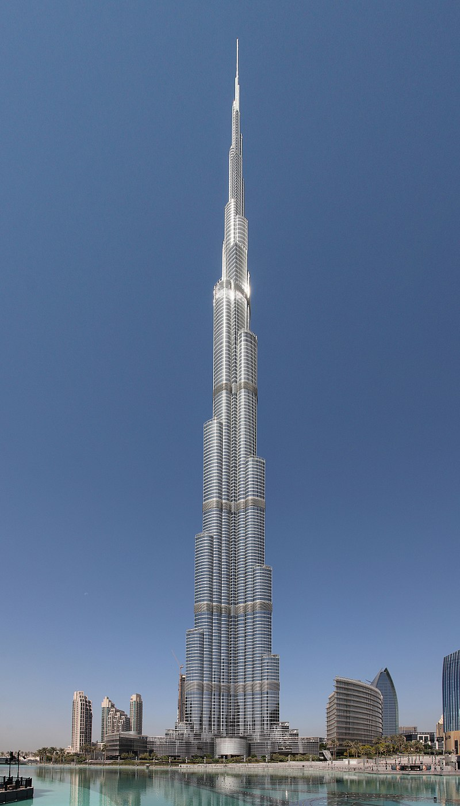

Burdż Chalifa
Wieżowiec w Dubaju, w Zjednoczonych Emiratach Arabskich, zbudowany przez przedsiębiorstwa Samsung Constructions, BESIX i Arabtec, o wysokości 828 metrów. Najwyższy budynek świata, który pobił rekord wysokości dla budowli dzierżony wcześniej przez polski Maszt radiowy w Konstantynowie (646m). Jego nazwa pochodzi od imienia szejka Chalify ibn Zajida Al Nahajjana, byłego prezydenta Zjednoczonych Emiratów Arabskich.
Rozbudowa
Początkowo konstrukcja miała mieć wysokość około 100 metrów i wykorzystywała projekt niewybudowanej nigdy wieży Grollo Tower w Melbourne w Australii. Niedługo potem przedsiębiorstwo Skidmore, Owings and Merrill nadało budynkowi obecny kształt i wygląd, podnosząc jego wysokość najpierw do 650, a później do 705 metrów.

Rekordy
- 20 maja 2008 stał się najwyższą lądową konstrukcją budowlaną, jaką kiedykolwiek zbudowano (tytuł ten odebrał polskiemu masztowi radiowemu w Konstantynowie, który miał 646 metrów wysokości; uległ on zniszczeniu 8 sierpnia 1991).
- 13 września 2007 stał się najwyższą budowlą wolno stojącą (tytuł ten odebrał kanadyjskiej CN Tower, mającej 553 metry wysokości).
- 21 lipca 2007 stał się najwyższym wieżowcem na świecie[8] (tytuł ten odebrał Taipei 101, w Republice Chińskiej, mającemu 509 metrów wysokości).